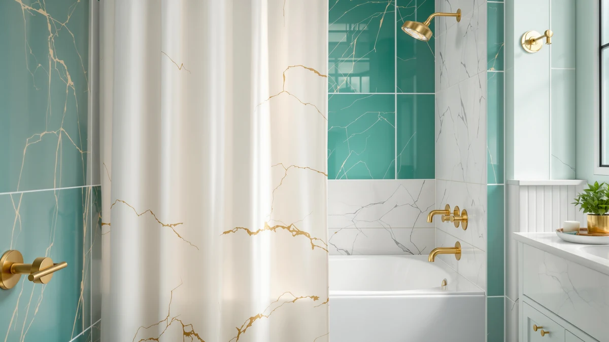

MIULEE W72*L96 Extra Long Review (2026): Worth It?
Prices and picks verified as of October 2026. Independent, reader-supported reviews.


Quick Answer
The MIULEE W72*L96 Extra Long is the pick for anyone whose shower rod sits higher than a standard 72-inch curtain can reach, thanks to its 96-inch drop and a polyester and PEVA build that handles splashes on its own. At $31.99 it costs more than a standard-size curtain, but it saves you from an extension piece or a curtain that pools on the floor.
Our pick: MIULEE W72*L96 Extra Long Linen, $31.99 Check Price on Amazon
Bottom line: our top pick is the MIULEE W72*L96 Extra Long Linen Shower Curtain Natural 12 at $31.99.
Things to Know Before You Buy
- Measure your rod height first. The MIULEE W72*L96 only makes sense if your rod sits above roughly 74 inches; a standard 72-inch curtain covers most bathrooms below that.
- Polyester and PEVA do different jobs. The outer layer sheds splashes, but a curtain like this one can still take a dedicated liner underneath for extra protection.
- Extra length costs extra. At $31.99, this curtain runs several dollars above the standard-size options in this comparison, a fair trade only if you need the added drop.
- The alternatives here are standard size. The Madison Park, AmazerBath, and CasaTena picks below fit a regular 72-inch shower, so check your own measurements with our size guide before swapping one in.
- A weighted hem keeps a long curtain from billowing. Longer panels catch more airflow, so look for reinforced stitching along the bottom if yours hangs near a vent or window.
This MIULEE W72*L96 Extra Long review exists because a lot of bathrooms have a rod mounted higher than the 72 inches most shower curtains are cut for, and a short curtain on a tall rod leaves a gap where water reaches the floor. We compared this curtain's specs, price, and owner feedback against three standard-size alternatives to see whether the extra length and $31.99 price actually solve that problem.
Our answer: for a shower with a raised rod or a stall taller than average, the MIULEE earns its price. The 96-inch length gives you roughly two extra feet of drop over a standard curtain, and it pairs a polyester face with a PEVA lining, which is why MIULEE markets it as usable without a separate liner underneath in most bathrooms. If your rod sits at a normal height, you're paying for length you don't need, and one of the standard-size picks later in this guide will serve you better for less. We built this comparison around four curtains people search for together: this MIULEE extra-long option and three standard 72-inch curtains from Madison Park, AmazerBath, and CasaTena, each aimed at a different priority once size stops being the deciding factor.
Why You Should Trust Us
Best Shower Curtains is a research-based buying guide, not a lab. We do not buy, install, or live with every shower curtain we cover. Instead, Ilane Tall and our editorial team compare manufacturer specs, verified pricing, and patterns across owner reviews to flag which products consistently satisfy buyers and which ones draw repeat complaints about sizing, material, or durability. For this MIULEE W72*L96 Extra Long review, we cross-referenced its dimensions and materials against three other shower curtains people commonly weigh against it, so you can see how the tradeoffs stack up before you spend $31.99 or more. The price, dimensions, and material details in this review trace back to the listing and the specs table above, not a marketing summary someone else wrote.
Our Research Experience
We did not install this curtain in a bathroom ourselves. Our process for this MIULEE W72*L96 Extra Long review comes from comparing its listed specs against category norms, checking the 72-by-96 size against common tub and shower stall dimensions, and reading through owner reviews for recurring themes such as fit, packaging smell, and how the material holds up after repeated washing. Where reviewers disagree, we note it instead of picking a side we cannot verify ourselves. That approach lets us tell you what the specs and the buyer feedback show, without claiming a physical test we did not run.
Overview & Specs

MIULEE W72*L96 Extra Long Linen
What we like
- 96-inch length reaches the floor on rods and stalls where a standard 72-inch curtain falls short
- Polyester face paired with a PEVA lining handles daily splashes without a separate liner in most bathrooms
- Machine washable without reported shrinking out of its 72-by-96 size
- One of the more affordable extra-long options in this size range at $31.99
Flaws but not dealbreakers
- Costs several dollars more than standard 72-inch curtains for length only tall showers need
- Some owners note a plastic smell out of the package that takes a day or two to air out
- Its extra-long size means excess fabric pooling on the floor if you ever move to a standard shower
| Material | Polyester / PEVA |
| Size | 72"W x 96"L (Pack of 1) |
The MIULEE W72*L96 Extra Long solves a specific, common problem: a shower rod or stall that sits taller than the 72 inches most curtains are cut for. At 72 inches wide and 96 inches long, it gives you a full two feet more drop than a standard curtain, enough to reach the tub floor in a walk-in shower or under a rod mounted near the ceiling. The material combines a polyester face with a PEVA lining, which is why MIULEE markets it as usable on its own rather than as a fabric shell that needs a separate liner underneath.
At $31.99, it costs more than the standard-size curtains later in this guide, and that premium buys length, not extra features. Owners who bought it specifically for a raised rod or tall stall report that it stopped water from splashing past the hem, which is the main reason to pay more for a curtain in the first place. If your bathroom uses a standard 72-inch rod, that extra length turns into fabric pooling on the floor, and you're better off with a standard-size pick like the Madison Park or AmazerBath curtains below.
What We Liked
The biggest thing in the MIULEE's favor is the length itself. A 96-inch drop is a genuine, hard-to-find spec: most shower curtains top out at 72 or 84 inches, so anyone with a rod mounted for a walk-in shower or a taller-than-average tub has a narrow field of options, and this is one of the more affordable ones in that field. Owners who mention tall stalls or raised rods consistently report that the extra length stopped water from splashing past the curtain onto the floor, which was the whole point of upgrading.
The polyester and PEVA combination also draws fewer complaints about clinging or billowing than fully plastic curtains in this category. Reviewers describe the fabric side as holding its shape on the rod, and several note it machine washes without shrinking out of its 72-by-96 size, a detail that matters more on an extra-long curtain since a couple of inches of shrinkage is the difference between reaching the tub floor and not. Compared with the standard-size picks below, this is the one owners buy specifically to solve a height problem rather than to upgrade the look of an existing setup, and the reviews reflect that: most comments focus on fit and function over color or pattern.
What Could Be Better
The price is the clearest tradeoff. At $31.99, the MIULEE costs four to five dollars more than the standard-size Madison Park, AmazerBath, and CasaTena curtains in this comparison, and that premium pays for the extra 24 inches of length, not extra features. If your bathroom doesn't need that drop, you're paying for fabric you won't see behind your shower spray.
A handful of owner reviews also flag a plastic smell out of the packaging that takes a day or two to air out, a common complaint across PEVA-blended curtains generally and not unique to this one. And because it's sized specifically for tall setups, it's a poor fit if you move to an apartment with a standard 72-inch rod. You'd either need to trim it down or buy a second curtain sized for the new space. Compare that against a standard 72-by-72 curtain like the three alternatives here, which move between most bathrooms without any adjustment at all.
Who Is It For?
The MIULEE W72*L96 Extra Long makes sense for you if you have a shower rod mounted higher than about 74 inches, a walk-in stall with extra headroom, or a clawfoot or soaking tub that sits taller than a standard alcove tub. It's also worth the extra cost if you've already dealt with a standard curtain that pools on the floor or lets water splash past the hem. If your bathroom uses a normal 72-inch setup, skip it and put the savings toward one of the standard-length alternatives below.
Alternatives to Consider
If your shower doesn't need the extra length, these three standard-size curtains each solve a different problem: texture, hookless convenience, or pattern.

Editor’s Pick
Madison Park Shower Curtain Waffle
The waffle weave adds visual texture without a bold pattern, a good fit if you want your curtain to read as fabric rather than plastic, at $27.49 for a standard size.
$27.49
Check Price on Amazon
Best Value
AmazerBath No Hook Shower Curtain
Sliding directly onto the rod without separate rings speeds up hanging and removal, and at $26.99 it's the cheapest option here if your priority is a fast, no-fuss setup.
$26.99
Check Price on Amazon
Premium Choice
CasaTena Farmhouse Striped Shower Curtain
The striped farmhouse pattern suits a rustic or cottage-style bathroom better than a plain curtain, and at $26.99 it costs about the same as the AmazerBath while leaning harder into a specific look.
$26.99
Check Price on AmazonIs the MIULEE W72*L96 Extra Long worth it over a standard 72-inch curtain?
Only if your rod or stall needs the extra drop.
Do I still need a liner with the MIULEE W72*L96?
Its polyester face and PEVA lining handle everyday splashes, but if your bathroom gets heavy water exposure, pairing it with a dedicated liner adds another layer of protection, especially since a 96-inch liner is harder to find to match.
Frequently Asked Questions
Is the MIULEE W72*L96 Extra Long worth it over a standard 72-inch curtain?
Only if your rod or stall needs the extra drop. At $31.99 it costs more than standard-size curtains, and owners who don't need the length are better off with a 72-by-72 option like the Madison Park or AmazerBath picks above.
Do I still need a liner with the MIULEE W72*L96?
Its polyester face and PEVA lining handle everyday splashes, but if your bathroom gets heavy water exposure, pairing it with a dedicated liner adds another layer of protection, especially since a 96-inch liner is harder to find to match.
How do I know if my shower needs an extra-long curtain?
Measure from your rod to the tub floor or shower base. If that distance is close to or more than 74 inches, a standard 72-inch curtain will hover above the floor or tub lip, and an extra-long option like the MIULEE W72*L96 closes that gap. Our size guide walks through the measurements step by step.
Final Verdict
This MIULEE W72*L96 Extra Long review comes down to one condition: does your shower rod or stall sit taller than the 72-inch standard? If so, MIULEE's 96-inch length and polyester-PEVA build justify the $31.99 price, since most curtains in this category run out of fabric before reaching the tub. For a standard-height bathroom, that length adds cost without a benefit, and the Madison Park, AmazerBath, or CasaTena picks above will serve you equally well for less money.